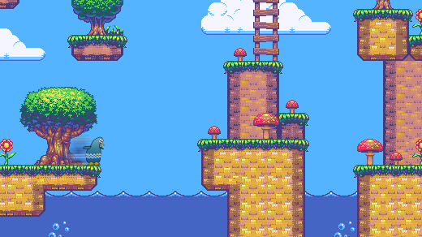

Pygame
Pygame
Pygame was originally written by Pete Shinners to replace PySDL after its development stalled. It has been a community project since 2000 and is released under the free software GNU Lesser General Public License (which "provides for Pygame to be distributed with open source and commercial software").
